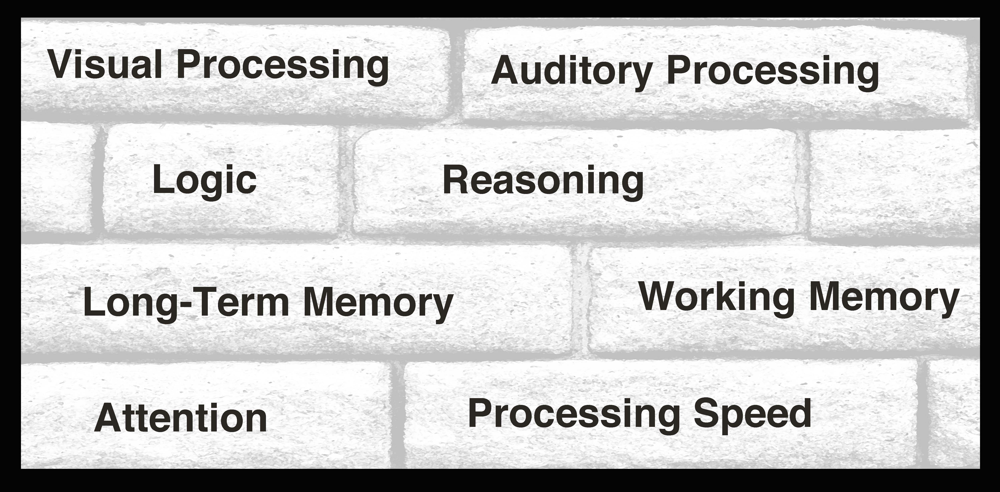

Struggling with...
|
 |
|
ACE Brain Fitness can help address learning issues by improving cognitive skills - the underlying skills which form the foundation for learning, and can help adults keep their mental edge. Cognitive skills can be maintained and improved by engaging in an effective brain fitness program. The goal of ACE Brain Fitness is to help clients Achieve Cognitive Excellence. Whether you are looking for some help for your child to improve academic success or you are an adult interested in sharper mental skills, ACE is here to help. ACE Brain Fitness is owned and operated by MJ Moravec, who is a certified cognitive skills trainer, and has 25+ years of experience in various forms of teaching, in both individual and group settings. Continuing Education courses include "Advances in Preventing Cognitive Decline", "Cognition, Successful Aging, and Nutrition", "The Ever-Changing Brain", "Optimizing Brain Fitness", "Teaching Students With ADHD" and "Teaching Students With Autism: Strategies for Success". ACE Brain Fitness is located in Wabasha, MN at 249 Big Jo Alley, Unit 1 (behind the video store, next to the back of the Chinese restaurant). Call 507-990-6456 or email mj@acebrainfitness.com to discuss your specific needs and brain training options. |
||